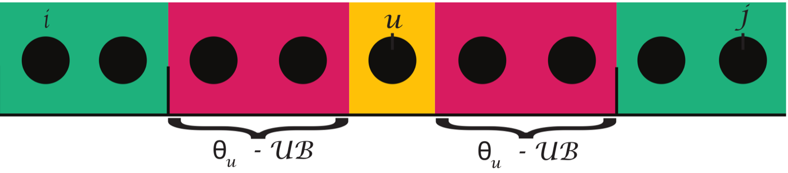
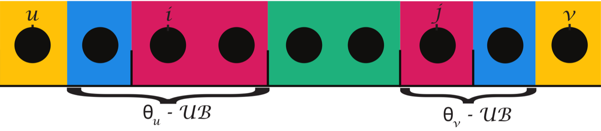
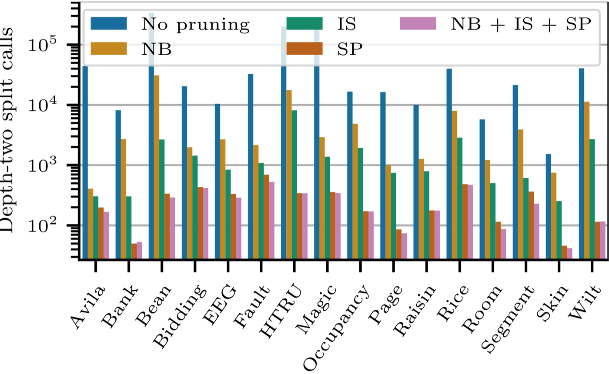
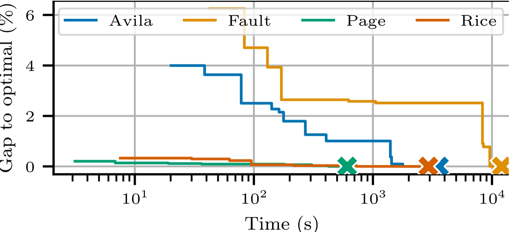

- 深さ 3 で 63 倍速い16 データで Quant-BnB と比べた計算時間の幾何平均。Bidding の 7 倍から Fault の 266 倍まで。
- 分割の計算を 99.6% 省く深さ 2 の木で、部分区間の枝刈りだけで深さ 2 の分割の呼び出しの平均 99.6% を省いた。3 つの枝刈りを組み合わせると、さらに約 10% 減った。
- テスト精度 CART +4.7%深さ 3 の木で、CART より平均 4.7%、10 分位点で二値化した最適な木より 0.7% 高かった（16 データ、5 回の分割）。
動的計画法の最適決定木は速いが、連続の特徴量は二値化しないと扱えなかった
深さを決めたうえで訓練データの誤分類数を最小にする最適決定木は NP 困難な問題である。MIP、制約プログラミング、SAT の定式化は数千件を超えるデータや深さ 3 を超える木で行き詰まり、DL8.5 や MurTree のような動的計画法と分枝限定法の専用アルゴリズムのほうが大きな問題まで解ける。ただしこれらは二値の特徴量を前提にしている。
連続の特徴量を二値化するには 2 つの道がある。しきい値を粗く選ぶと（たとえば 10 個の分位点）、その中で最適でも本来の最適な木は逃しうる。すべてのしきい値を 1 つずつ二値の特徴量にすると最適性は保てるが、計算時間は特徴量の数について指数的に増える。連続の特徴量を直接扱う専用のアルゴリズムとしては Quant-BnB があるが、深さ 3 の木でも数時間かかるデータがあり、作者自身が深さ 3 を超える使い方を勧めていない。
ConTree はすべての特徴量とすべてのしきい値で左右に分ける再帰を、二値化せずに解く
特徴量 \(f\) の値を並べたとき、隣り合う異なる値の中点をしきい値の候補 \(S^f\) とする（候補の数は \(m = |S^f|\)）。部分問題はデータ \(\mathcal{D}\) と残りの深さ \(d\) で決まり、次の再帰で最小の誤分類数を求める。
しきい値 1 つにつき大きな部分問題が 2 つずつ出るので、すべての候補をそのまま調べると重い。ConTree は最適性を保ったまま、(1) 連続の特徴量向けの 3 つの枝刈り、(2) 深さ 2 専用の解法、(3) MurTree と同じデータ単位のキャッシュで速くする。最適解からの差の上限（max-gap）を指定して、時間と精度を引き換えにすることもできる。扱うのは各分岐で 1 つの特徴量としきい値を使う軸に平行な二分木である。
値を並べておけば分割点どうしの違いを添字の差で数えられるので、近い分割点を下界でまとめて捨てられる
枝刈りのもとになるのは類似度による下界である。前に解いたデータ \(\mathcal{D}_{old}\) の最適な誤分類数 \(\theta_{old}\) から、新しいデータの最適値は \(\theta_{new} \ge \theta_{old} - |\mathcal{D}_{old} \setminus \mathcal{D}_{new}|\) と下から抑えられる。しきい値を \(\tau\) から \(\tau'\) に動かすと、左右を移るデータの数は並べた値の添字の差 \(|z(\tau) - z(\tau')|\) で \(O(1)\) で求まる。ここから定理 1 が出る。
\(\mathcal{UB}\) はこれまでの最良値（または改善に必要な値）である。ConTree は特徴量ごとに、まだ最適な分割を含みうるしきい値の添字の区間の集合 \(Q\) を持ち、区間の中点 \(w\) で分割を解いては \(Q\) を削る。
- 近傍の枝刈り（NB）：分割点 \(u\) を解いて \(\theta_u\) が \(\mathcal{UB}\) を \(\Delta\) 上回ったら、\(u\) から添字で \(\Delta\) 以内の分割点を捨て、区間を 2 つに分ける。境界は二分探索で \(O(\log m)\) で求まる。
- 区間の縮小（IS）：\(\mathcal{UB}\) が更新されたとき、区間の外側ですでに解いた最も近い分割点 \(u, v\) から同じ下界をあらためて当てはめ、区間の両端を削る。左（右）の部分木の誤分類が 0 になった分割点があれば、それより左（右）の分割点は改善しないことも使う（定理 2）。
- 部分区間の枝刈り（SP）：区間 \([i..j]\) の外側の解いた分割点 \(u < i\)、\(v > j\) について、\(\theta_{u,L} + \theta_{v,R} > \mathcal{UB}\) なら区間の中のどの分割点も改善しないので、区間ごと捨てる（定理 3）。左の部分木はしきい値を右に動かすほどデータが増え、右の部分木は減るからである。


図1 黄色が下界の計算に使う解いた分割点、赤が新たに捨てる分割点、緑が残る分割点、青は区間の外（論文 Fig. 1、arXiv v1）。
類似度の下界は OSDT、GOSDT、MurTree も使っていたが、2 つのデータの違いを数えるのに \(O(n)\) かかっていた。ConTree は並べた連続値の性質を使って違いを \(O(1)\) で求め、枝刈りを \(O(\log m)\) で適用する。Quant-BnB の下界の 1 つは部分区間の枝刈りに似ているが、残りの深さによらない点が違う。Quant-BnB のほかの下界はより強いが計算も重く、ConTree に取り入れるのは今後の課題とされている。
深さ 2 の木は、並べたデータを 1 回たどるだけで左右の部分木をまとめて解く
MurTree の深さ 2 専用の解法は二値の特徴量の数の 2 乗のメモリを使うので、しきい値ごとに二値の特徴量を作る使い方には向かない。ConTree の D2Split は根の分割点 \(w\) で左右に行くクラスごとの件数 \(FQ^y_L, FQ^y_R\) を数えたあと、2 段目の特徴量 \(f_2\) の順にデータを 1 回たどり、左右それぞれの件数 \(C^y_L, C^y_R\) を更新していく。4 つの葉の件数は \(C^y_L,\ FQ^y_L - C^y_L,\ C^y_R,\ FQ^y_R - C^y_R\) で決まるので、根の分割 1 つにつき \(O(|\mathcal{D}||\mathcal{F}|)\) で最適な深さ 2 の木が求まる。データは最初に 1 回並べておけば、分割しても順序は崩れない。
深さ 3 以上では、左の部分木の最適値から右の部分木の上界を作る。上界を \(\mathcal{UB} - \theta_{w,L}\) と厳しくすると右の部分問題を早く打ち切れるが、枝刈りに使える情報が得られず、かえって遅くなることが多かった。そこで上界を \(\mathcal{UB} - \theta_{w,L}\) と、区間の端から中点までの長い方の距離 \(\eta\) の大きい方にした。
3 つの枝刈りは深さ 2 の分割の呼び出しを大きく減らし、深さ 2 の解法は計算時間を 320 分の 1 にした
実験は UCI の 16 データ（Quant-BnB の訓練用の分割）、Intel Xeon 2.1 GHz、メモリ 25 GB、時間の上限 4 時間で行った。
- 深さ 2 の木で、近傍の枝刈り、区間の縮小、部分区間の枝刈りは、深さ 2 の分割の呼び出しをそれぞれ平均 91.1%、97.5%、99.6% 省いた。区間ごと捨てられる部分区間の枝刈りがたいてい最も効き、3 つを組み合わせると部分区間の枝刈りだけの場合よりさらに平均 10% 減った。
- 深さ 2 の解法を使うと、使わない場合より計算時間が幾何平均で 320 分の 1 になった（どちらも 3 つの枝刈りを使用）。

深さ 2 と 3 では既存の最適な手法より 1 桁以上速く、深さ 4 の最適な木も 16 データ中 12 データで 4 時間以内に求めた
比べたのは連続の特徴量を直接扱う最適な手法である。MIP の OCT と RS-OCT（どちらも CART で初期化し、8 スレッドまで）、SAT の手法（Shati ら）、Quant-BnB を、各データで 20 回ずつ動かした（時間切れの場合を除く）。
- 深さ 2：MIP は 4 時間後でも最適性のギャップが大きく残り、OCT は 2 回メモリ不足になった。SAT の手法は 7 データで時間切れになった。Quant-BnB と ConTree はどちらも 1 秒前後かそれ以下で、ConTree は全データで最も速かった（たとえば Avila で 2 秒と 0.1 秒）。
- 深さ 3：ConTree は Quant-BnB より幾何平均で 63 倍速かった。Htru では 13,147 秒と 74 秒、Fault では Quant-BnB が 4 時間を超え、ConTree は 55 秒だった。
- 深さ 4：Quant-BnB の実装は深さ 3 までしか扱えないので、ConTree だけを測った。4 データ（Bean、Eeg、Htru、Magic）を除いて 4 時間以内に最適な木を求めた。最適値との差を 1% 以内に許すと（max-gap = \(\lfloor 0.01 |\mathcal{D}| \rfloor\)）、Htru は 191 秒、Magic は 5,719 秒で終わるなど、時間は大きく減った。付録では深さ 5 で 8 データ、深さ 6 で 7 データの最適な木を求めて証明している。
- メモリ：深さ 3 で、Quant-BnB は Eeg と Htru で 15 GB、Fault で 25 GB を使ったが、ConTree は 18 MB、15 MB、7 MB だった。深さ 4 での最大は Skin の 123 MB だった。
Quant-BnB は BinOCT、DL8.5、MurTree（すべてのしきい値を二値化した場合）より 1 桁以上速いという比較が Quant-BnB の論文にあり、論文はそれと合わせて、ConTree が既存の最適な手法より 1 桁以上速いと結論している。
良い木は早く見つかることが多く、テスト精度は CART や二値化した最適な木より高かった
深さ 4 の探索で最良の解の推移を見ると、Fault では最後の改善が探索の終盤に見つかったが、Avila、Page、Rice では良い解が早く見つかり、残りの時間の大半は最適性の証明に使われた。

テスト精度は付録で、全データを使った 80% と 20% の層化分割を 5 回行い、深さ 3 の上限のもとで比べた（付録の表、16 データ）。CART はコスト複雑度、10 分位点やしきい値の推定（McTavish ら）で二値化したデータの最適な木（STreeD で学習）は深さとノード数、ConTree は深さを、検証データで調整した。
- ConTree のテスト精度は CART より平均 4.7% 高く、Segment では差が 30%（56.8% と 87.1%）あった。10 分位点の二値化より 0.7%、しきい値の推定による二値化より 1.0% 高く、ウィルコクソンの符号順位検定ではどれも有意だった（\(p < 0.01\)）。
- 16 データのうち最も精度が高かったのは ConTree が 12、しきい値の推定が 5、10 分位点が 2、CART が 0 データ（同率を含む）。Rice ではしきい値の推定のほうが高かった。
要旨と本文は CART より「5%」高いと書き、付録は 4.7% としている。本文は図 3 の説明で「3 つのデータ」と書くが、図と本文の説明には Avila、Fault、Page、Rice の 4 つが出てくる。
二値化に頼らずに深さ 4 まで届く最適な分類木だが、分岐は軸に平行で、目的は誤分類数に限られる
- STreeD などの動的計画法の流れに、連続の特徴量を直接扱う枝刈りを持ち込んだ研究である。STreeD（2023）は今後の課題に連続の特徴量を挙げていた。
- 今後の課題として、分岐ノードの数への罰則や上限による疎な木、OSRT や van den Bos らの下界を使った回帰への拡張、カテゴリ変数のべき集合での分岐を挙げている。
- Skin のように大きなデータでは深い木でメモリが増える（深さ 5 で 782 MB）。論文はデータ単位のキャッシュを枝単位のキャッシュに替えればメモリを減らせるとしている。
@inproceedings{brita2025contree,
title = {Optimal Classification Trees for Continuous Feature Data Using Dynamic Programming with Branch-and-Bound},
author = {Bri{\c{t}}a, C{\u{a}}t{\u{a}}lin E. and van der Linden, Jacobus G. M. and Demirovi{\'c}, Emir},
booktitle = {Proceedings of the AAAI Conference on Artificial Intelligence},
volume = {39},
number = {11},
pages = {11131--11139},
year = {2025},
doi = {10.1609/aaai.v39i11.33210}
}
ページの数値と図は arXiv 2501.07903 v1（付録を含む）による。出版版（AAAI）の本文とは照らし合わせていない。書誌情報と著者名の表記は Crossref と AAAI の論文ページによる。